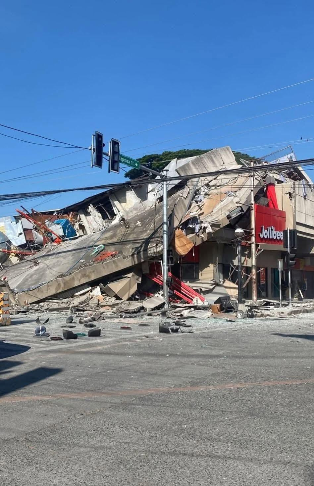
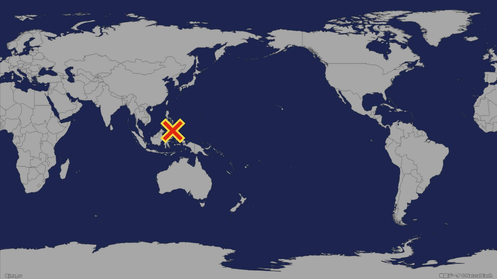
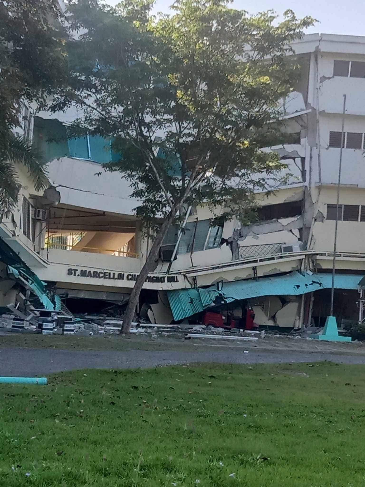
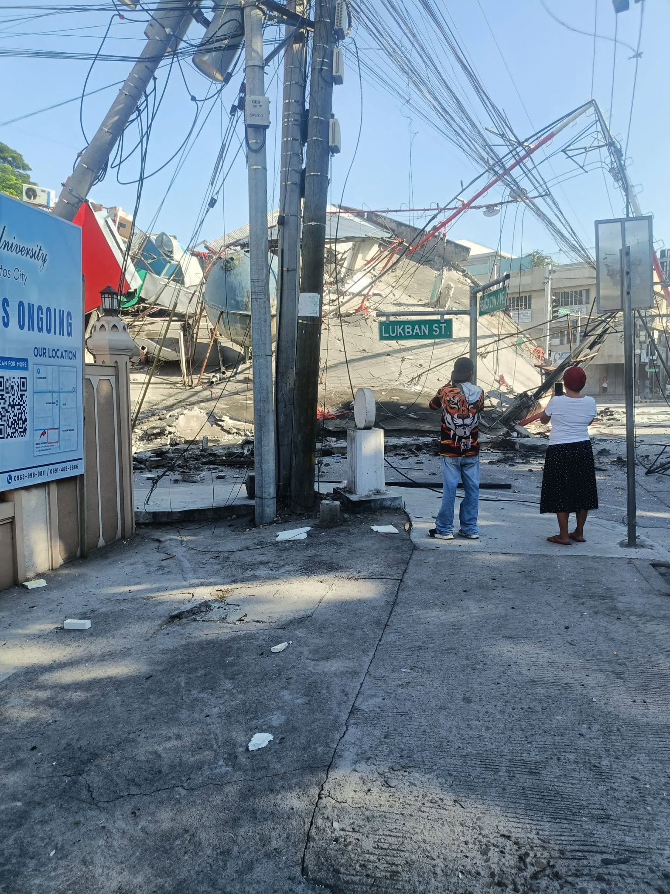
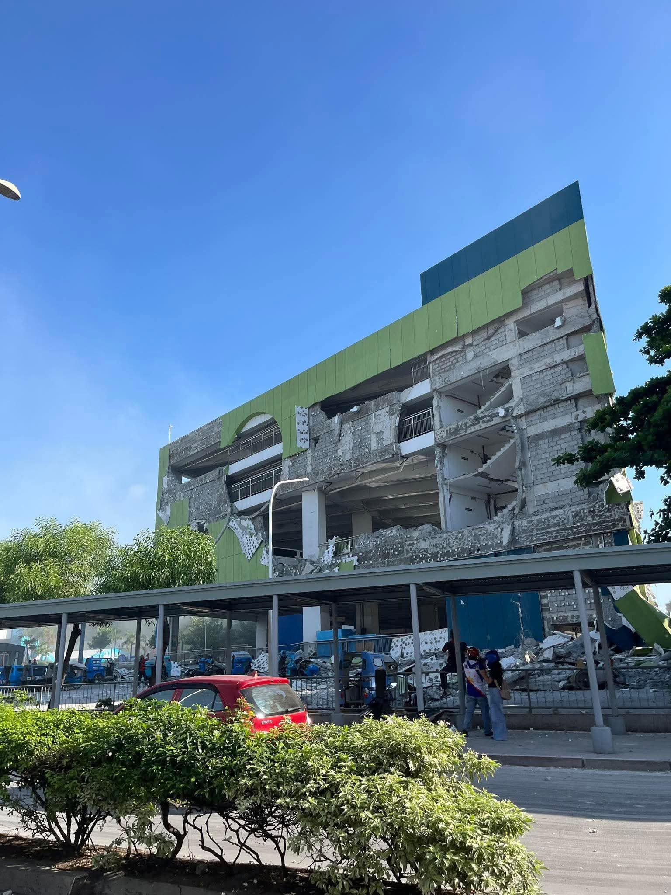

被害状況
2026年6月8日午前、フィリピン南部ミンダナオ島沖を震源とする マグニチュード7.8（米国地質調査所）の大地震が発生しました。 震源の深さは約35km。フィリピン火山地震研究所（PHIVOLCS）は 沿岸部に津波警報を発表し、震源近くでは1メートルを超える津波が観測されました。
震源に近い都市では建物の倒壊が相次ぎ、学校や住宅、商業施設にも 大きな被害が出ています。多くの住民が避難を余儀なくされ、 水・食料・医療・安全な避難場所の確保が急がれています。
出典：USGS、PHIVOLCS、各国報道（2026年6月8日時点）。状況は刻々と変化しています。




ご寄付の使い道
安全な飲料水、食料、衛生用品を被災者へ届けます。
テントや毛布など、安全に過ごせる場所を確保します。
負傷者の手当てや医薬品、巡回医療を支えます。
住まいの修復や子どもの就学など、長期の復興を支援します。
寄付する
いただいたご寄付は、国際 P-LP 財団を通じて 現地の救援・復興支援に活用されます。少額からのご支援も大きな力になります。
運営団体
一般財団法人 国際ピース・ラビング・ピープル財団（略称：国際 P-LP 財団／International Peace-Loving People Foundation・IPLPF） は、2020年11月に設立され、「世界平和と人類の発展・福祉に寄与する」ことをめざす財団です。 日本および世界で peace-loving people（平和を愛する人々） を増やし、 世界の平和のための国際機関である国連を民間の立場から支援する活動に取り組んでいます。
その基本ミッションのひとつである 「人道支援の促進 ― 誰も取り残さない社会づくり」 の一環として、本募金はフィリピン・ミンダナオ島地震の被災者支援を目的に実施しています。 皆さまからお預かりした寄付は、現地のニーズに応じて緊急救援および復興支援に活用されます。
財団公式サイト（iplpf.org）を見る ↗一人でも多くの peace-loving people を増やします。
国際秩序の基盤である「国連憲章」と「国際法」の大切さを伝える情報提供を行います。
誰も取り残さない社会づくりをめざします。本募金はこのミッションに基づく活動です。
あなたの温かいご寄付は、ミンダナオ島地震の被災者支援に役立てられます。